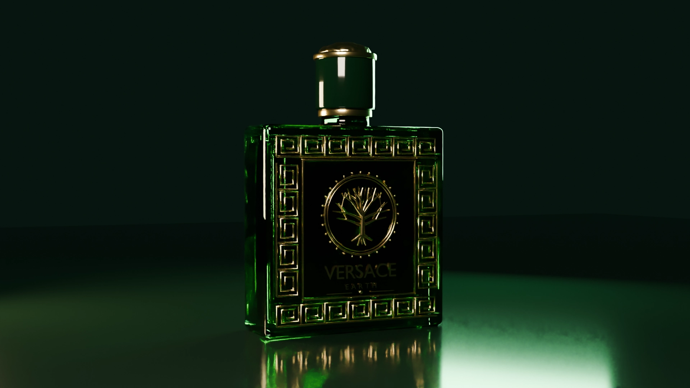

Versace Myrhee
Maturitní projekt: 3D animace parfému Versace Myrhee v Blenderu. Zelenozlatá paleta, pomalé kamerové jízdy a materiály skla a kovu.
Grafik ze Zlína. Dělám vizuální identity, 3D animace a loga, které vypadají a fungují!
Prohlédnout práce
Maturitní projekt: 3D animace parfému Versace Myrhee v Blenderu. Zelenozlatá paleta, pomalé kamerové jízdy a materiály skla a kovu.

Návrh vizuální identity postavený na jednoduchém symbolu, čitelnosti a propojení značky s oborem arboristiky.
Ukázka zaměření na webovou tvorbu a digitální prezentaci. Konkrétní realizace a detaily projektu budou doplněny.
Ukázka zkušeností z prostředí IT a vývoje digitálních řešení. Konkrétní realizace a detaily projektu budou doplněny.
Studuji informační technologie a věnuji se grafickému designu. Baví mě hledat rovnováhu mezi výrazným vizuálem, promyšleným detailem a funkčním výsledkem.